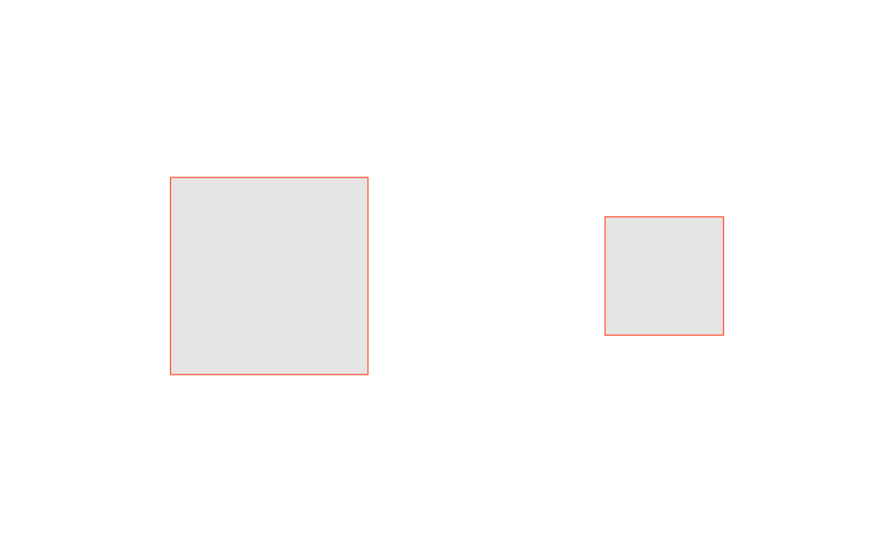
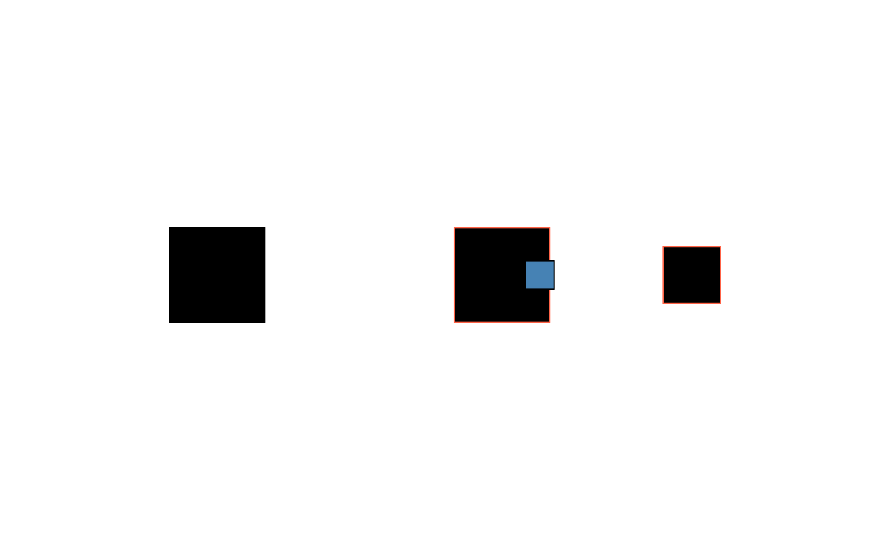

group bundles several drawable/group objects (shapes) together
with one shared trans and, optionally, one shared style override –
the whole group can be rotated/scaled/moved as a unit, or restyled as a
unit, without touching any member's own trans/style. This is
different from sketch, which represents the whole canvas of
independently-styled/-positioned shapes; a group is meant to be one
element inside a sketch (or inside another group), not a
replacement for it.
Usage
group(shapes = list(), trans = trans_identity(), style = NULL)Arguments
- shapes
- trans
A trans/trans_warp/trans_fn/trans_chain, applied to every member as a unit. Default
trans_identity().- style
A style object overriding every descendant drawable's own style, or
NULL(default) for no override.
Details
Groups are built up incrementally with +, the same way a sketch is:
group() + shape_circle() + shape_circle(x = 2). group + <trans-like>
composes the transform onto the group's own @trans, applied to every
member as a unit – it does not touch any member's own @trans. A
group can itself be added to a sketch (or nested inside another
group), and mixed freely with plain drawables in either container.
style, when set (default NULL, meaning no override), is meant to
replace every descendant drawable's own @style when the group is
drawn – a nested group with no style of its own would inherit its
ancestor's override; a nested group that sets its own style would
keep that instead (the nearest override wins, it does not stack). This
cascade is implemented by draw()'s own group method, not by group
itself.
Examples
# shape_square() (rather than shape_circle()) makes a rotation visually
# detectable -- a circle's outline is rotationally symmetric about its
# own centroid, so rotating one in place looks identical to the original
g <- group() + shape_square(side = 1) + shape_square(x = 2, side = 0.6)
draw(g)
# a trans applied to a group composes onto every member as a unit,
# without changing any member's own @trans -- both squares rotate about
# the group's own origin, sweeping the smaller one around the larger one
draw(g + trans_rotate(pi / 6))
# a style override, applied to every member when the group is drawn
draw(g + style(color = "tomato", fill = "grey90"))

# groups mix freely with plain drawables inside a sketch, and can nest;
# a nested group's own style override wins over an outer one, and an
# outer group's trans applies on top of everything inside it
inner <- group() + shape_square(x = 0.4, side = 0.3) + style(fill = "steelblue")
outer <- (group() + g + inner + style(color = "tomato")) + trans_translate(1, 0)
draw(sketch() + shape_square(x = -2) + outer)
